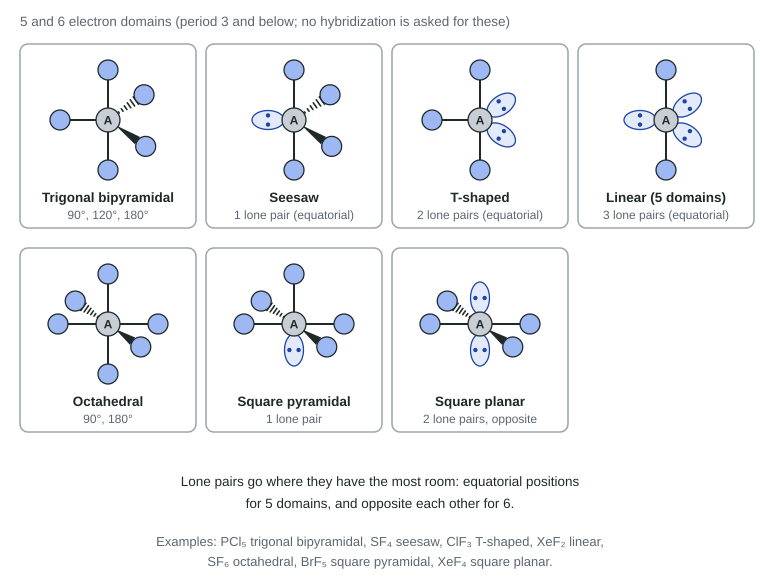
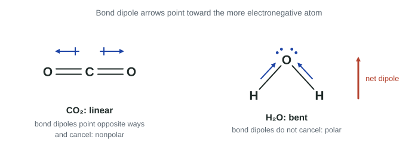

A Lewis diagram is flat, but molecules are not. Water is bent, carbon dioxide is straight, methane is a small pyramid with four faces. The shape decides whether a molecule is polar, and in Unit 3 polarity decides how molecules attract each other and how substances behave. This page turns a Lewis diagram into a three-dimensional shape in three steps: count the domains, find the arrangement, then place the atoms.
VSEPR: electron domains spread apart
VSEPR stands for valence shell electron pair repulsion. The idea is simple. Around a central atom, every bonding pair and every lone pair is a region of negative charge. These regions repel each other, so they spread out to be as far apart as possible.
Each region is an electron domain. Count them on the central atom like this:
- each lone pair is one domain;
- each bond to another atom is one domain, whether it is single, double or triple (all the electrons of a multiple bond point the same way, toward the same neighbor).
The number of domains (sometimes called the steric number) sets the electron-domain arrangement:
| Domains | Arrangement | Ideal angle(s) |
|---|---|---|
| 2 | linear | 180° |
| 3 | trigonal planar | 120° |
| 4 | tetrahedral | 109.5° |
| 5 | trigonal bipyramidal | 90°, 120°, 180° |
| 6 | octahedral | 90°, 180° |
Molecular geometry: where the atoms are
The molecular geometry names the positions of the atoms only. Lone pairs take part in the arrangement but are invisible in the name. When the central atom has no lone pairs, the molecular geometry is the same as the arrangement. When it has lone pairs, the shape of the atoms is different:

| Domains | Lone pairs | Molecular geometry | Example |
|---|---|---|---|
| 2 | 0 | linear | CO₂, BeCl₂ |
| 3 | 0 | trigonal planar | BF₃, H₂CO |
| 3 | 1 | bent | SO₂, O₃ |
| 4 | 0 | tetrahedral | CH₄, NH₄⁺ |
| 4 | 1 | trigonal pyramidal | NH₃, PCl₃ |
| 4 | 2 | bent | H₂O, OF₂ |
| 5 | 0 | trigonal bipyramidal | PCl₅ |
| 5 | 1 | seesaw | SF₄ |
| 5 | 2 | T-shaped | ClF₃ |
| 5 | 3 | linear | XeF₂, I₃⁻ |
| 6 | 0 | octahedral | SF₆ |
| 6 | 1 | square pyramidal | BrF₅ |
| 6 | 2 | square planar | XeF₄ |
With five domains, the positions are not all alike: three equatorial positions around the middle (120° apart) and two axial positions above and below (90° from the equator). Lone pairs go equatorial, where they have only two neighbors at 90° instead of three. With six domains, two lone pairs go opposite each other.

Bond angles and lone pairs
A bond angle is the angle between two bonds that meet at the same atom. Lone pairs make bond angles smaller than the ideal values. A lone pair is held by only one nucleus, so its electron cloud spreads out wider and closer to the central atom than a bonding pair does. It pushes the bonding pairs together:
- CH₄ (no lone pairs): 109.5°
- NH₃ (one lone pair): about 107°
- H₂O (two lone pairs): about 104.5°
On the exam, "slightly less than 109.5°" is the expected answer for NH₃ and H₂O, with the reason: the lone pair repels more strongly than a bonding pair.
Worked example. Predict the shape and bond angle of sulfur dichloride, SCl₂ (S central).
1. Lewis diagram: 6 + 2 × 7 = 20 electrons. Two S–Cl single bonds (4), three lone pairs on each Cl (12), and the last 4 electrons as two lone pairs on S.
2. Domains on S: 2 bonds + 2 lone pairs = 4, a tetrahedral arrangement.
3. Geometry: two of the four domains are lone pairs, so the atoms form a bent shape, with a Cl–S–Cl angle less than 109.5° (measured: about 103°).
Molecular polarity
A molecule is polar when it has a net dipole: one side is more negative than the other. Two things decide it:
- Polar bonds. A molecule with only nonpolar bonds, such as Cl₂, has no bond dipoles to add up.
- Shape. Bond dipoles are arrows. If the shape is symmetrical and all the outer atoms are the same, the arrows cancel and the molecule is nonpolar.

Symmetrical shapes with identical outer atoms are nonpolar: linear (two domains), trigonal planar, tetrahedral, trigonal bipyramidal, octahedral, and also XeF₂ (linear) and XeF₄ (square planar), where the lone pairs are arranged symmetrically. Lone pairs on the central atom usually make the shape lopsided (bent, pyramidal, seesaw, T-shaped), so the molecule is polar. Replacing one outer atom with a different one (CH₃Cl instead of CH₄) also breaks the balance.
Worked example. Is SF₄ polar?
Claim: yes. Evidence: S has 5 domains (4 bonds, 1 lone pair), a seesaw shape. Reasoning: the S–F bonds are polar (F is more electronegative), and the lone pair makes the shape unsymmetrical, so the four bond dipoles do not cancel: there is a net dipole.
Hybridization, sigma and pi bonds
Bonds point in the directions VSEPR predicts, but s and p orbitals point in other directions. Chemists describe this by saying the central atom's valence orbitals mix into hybrid orbitals that point toward the domains. For the exam you only need to match the hybridization to the number of domains:
| Domains | Hybridization | Arrangement | Example |
|---|---|---|---|
| 2 | sp | linear, 180° | C in CO₂ and HCN |
| 3 | sp² | trigonal planar, 120° | C in H₂CO and C₂H₄; B in BF₃ |
| 4 | sp³ | tetrahedral, 109.5° | C in CH₄; N in NH₃; O in H₂O |
Lone pairs count: O in H₂O (2 bonds, 2 lone pairs) is sp³. Central atoms with five or six domains are not given a hybridization on this exam, and you are never asked to draw or derive hybrid orbitals.
Bonds also come in two kinds. The first bond between two atoms is a sigma (σ) bond, with its electron density along the line between the nuclei. Every extra bond in a double or triple bond is a pi (π) bond, with its electron density above and below that line.
- single bond: 1 σ
- double bond: 1 σ + 1 π
- triple bond: 1 σ + 2 π
Worked example. Count the σ and π bonds in ethene, H₂C=CH₂, and give the hybridization of each C.
Bonds: four C–H single bonds (4 σ) and one C=C double bond (1 σ + 1 π). Total: 5 σ and 1 π.
Each C has three domains (two C–H bonds and the double bond): sp², with angles of about 120°.
Common mistakes
- Counting a double bond as two domains. It is one domain.
- Forgetting lone pairs on the central atom. They change both the shape and the hybridization.
- Naming the arrangement instead of the shape. NH₃'s domains are tetrahedral, but the molecule is trigonal pyramidal.
- Judging polarity from a flat drawing. Use the 3-D shape.
- Hybridization from the electron configuration. It comes from counting domains in the Lewis diagram.